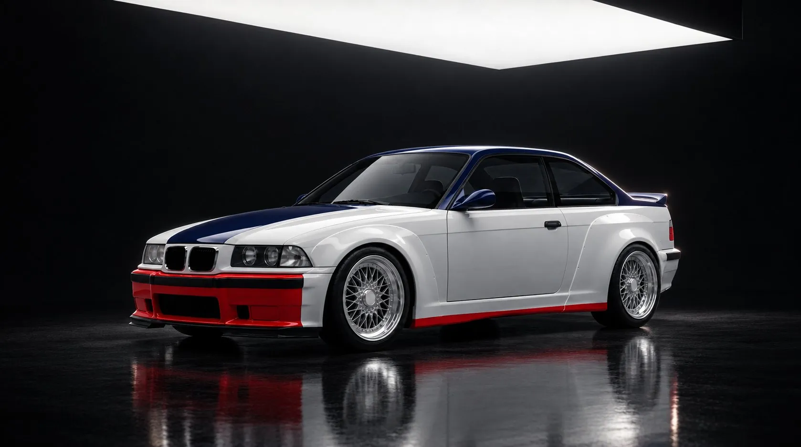
Lead study · BMW E36
Project 97
S54 straight-six · Manual
Concept render Nothing shown here has been built yet.
In 1996 the American racing M3s grew wide arches. The road car never did, so we drew it.
Summary
The short version
- The racer
- The wide-arched M3s that raced in IMSA from 1996 to 1998 and took class wins at Daytona and Sebring.
- What we change
- Wider arches shaped into the body, sills that run the full length, a ducktail that is part of the boot lid, and a new rear bumper with the exhausts in the middle.
- What it is for
- Driving on the road. Two seats, a straight-six and a manual gearbox; final structure subject to engineering.
- Settled
- The exterior direction, the E36 coupé as the base car, the S54 engine and a manual gearbox.
- What exists
- Renders, design drawings and a blueprint laid over the standard car. No donor car or engineering work yet.

Background
The arches that stayed on the circuit
These photographs show the original cars and were taken by other people. Each one is credited underneath.

In 1993 BMW entered its new E36 M3 in the ADAC GT Cup instead of touring cars, with a GTR version painted like a starting flag. Johnny Cecotto won the championship that year.
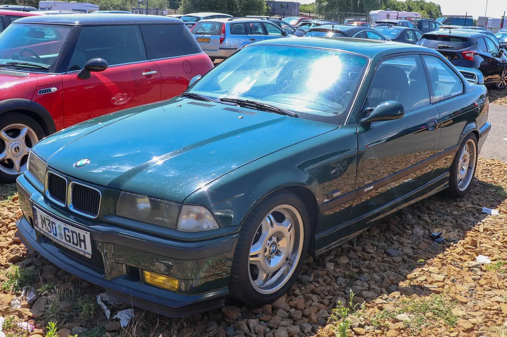
In America, Prototype Technology Group raced the M3 in IMSA. From 1996 the cars wore wide arches, and they won every available championship through 1998, with class victories at the 24 Hours of Daytona and the 12 Hours of Sebring.
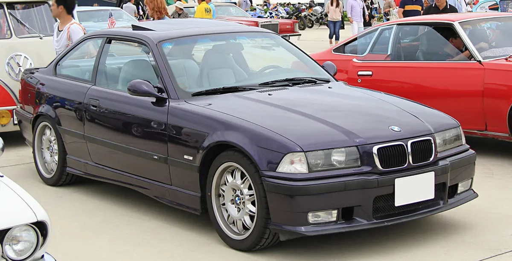
BMW never offered those arches on a car you could buy. Project 97 starts from the E36 coupé and adds them.
Timeline
- 1993M3 GTR, ADAC GT Cup champion with Johnny CecottoP1 Title
- 1995M3 GT, a restrained special for the road
- 1996Wide arches arrive on the IMSA cars
- 1997Class victory, 24 Hours of DaytonaP1 Class
- 1998Class victory, 12 Hours of SebringP1 Class
Drawings
How the arches join the body
Concept drawings These are made from the renders, so each line can be looked at without paint and reflections in the way.

The stance
From the front three-quarter you can see the flares grow out of the bumper corner and run into the sill. A single shoulder crease runs from nose to tail.

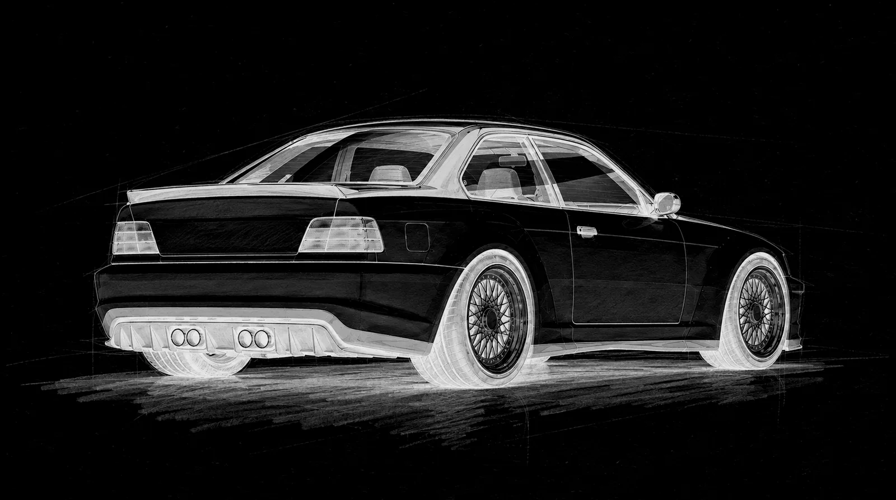
Profile and haunch
The rear haunch starts to rise just behind the door and is sized for a 295-section tyre. The ducktail is shaped into the boot lid, so there is no separate wing.
Details
The front
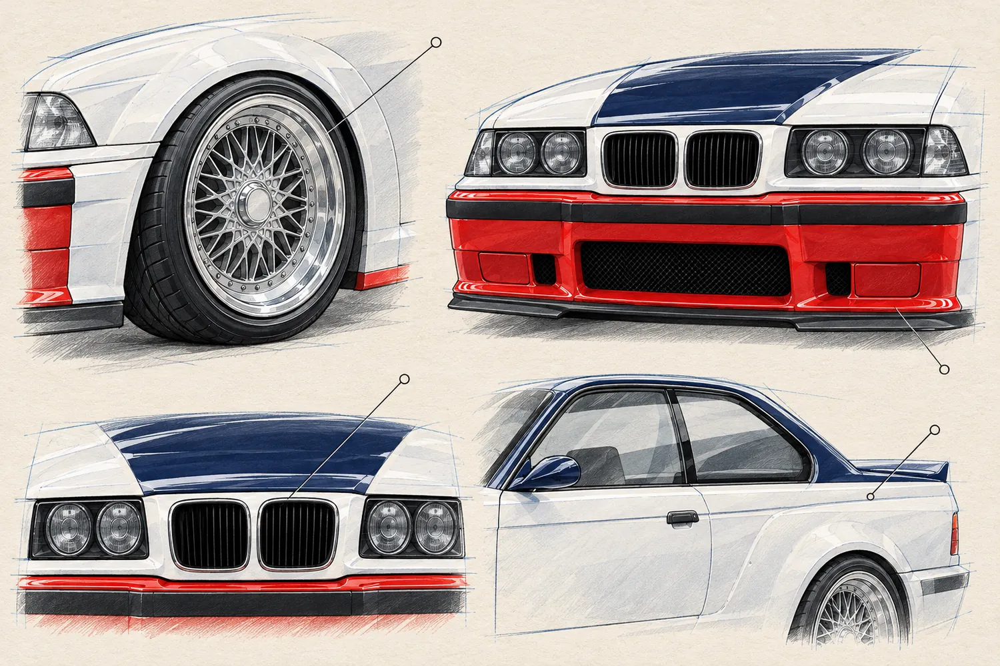
- Top left
- Cross-spoke mesh wheel with a polished lip, set flush in the moulded front arch.
- Top right
- Deeper front bumper with mesh intakes and a red lower edge.
- Bottom left
- Four round lamps and a slim twin grille, with no badges.
- Bottom right
- The shoulder crease that runs the length of the car.
Details
The rear
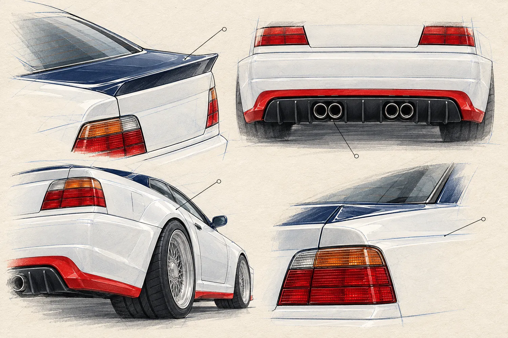
- Top left
- The ducktail, shaped into the boot lid in place of a wing.
- Top right
- A rear bumper modelled on the E46 M3's, with a strake diffuser and four exhausts in the centre.
- Bottom left
- The widened haunch, seen low from behind.
- Bottom right
- Rear lamp, shoulder and ducktail meeting in one line.
Against the original
Project 97 over a standard M3

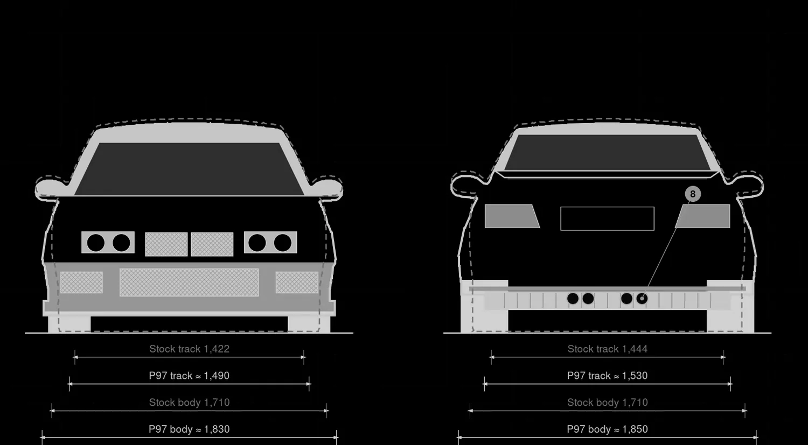
| Millimetres | Stock M3 | Project 97 |
|---|---|---|
| Length | 4,433 | ≈ 4,483 |
| Width F / R | 1,710 | ≈ 1,830 / 1,850 |
| Height | 1,335 | ≈ 1,305 |
| Wheelbase | 2,700 | 2,700 |
| Track F / R | 1,422 / 1,444 | ≈ 1,490 / 1,530 |
| Wheels | 17 in | 18 in mesh |
- Rear haunch, about +70 mm per side
- Front flare, about +60 mm per side
- One continuous shoulder crease
- Full-length sill, red lower edge
- Integrated ducktail, no wing
- Deeper front bumper and splitter
- 295-section rear tyres
- E46 M3-style rear bumper, centred quad exhausts
Concept blueprint, version B The dashed line is the standard E36 M3 coupé and the solid line is Project 97. Figures marked ≈ come from the design and will change once we can check tyre clearance on a scanned car. Nothing here has been engineered.
The car
Meant for the road
Project 97 keeps the shape of the E36 and adds the width it had as a racing car in America. The intention is a road car with two seats and a properly trimmed cabin. Its structural specification still needs engineering review.
The arches should look like part of the car, not an addition to it. The same thinking runs through the cabin and the mechanical brief: the seating position, controls, engine response and suspension should suit each other. Choosing the parts is only the beginning; making them work together is the job.
- Engine
- E46 M3 S54 straight-six
- Gearbox
- Manual
- Body
- Moulded wide arches, full-length sills, integrated ducktail
- Rear
- E46 M3-inspired bumper, strake diffuser, centred quad exhausts
- Wheels
- 18 in cross-spoke mesh, polished lips
- Cabin
- Two-seat road interior; final structure under review
This is what we would like to build. There are no power, weight or performance figures yet because the engineering has not been done.
Settled
- The exterior direction shown on this page
- The E36 coupé as the base car
- The S54 straight-six from the E46 M3
- A manual gearbox
- A two-seat road-car brief
Still to work out
- How the wider body is made, and in what material
- Final widths, track and tyre sizes, once we have a scanned car to check them on
- Suspension, brakes, cooling and exhaust
- Cabin materials and the seats
- Weight, performance and cost. We will not publish numbers until the engineering is done.
Colour
In four colours
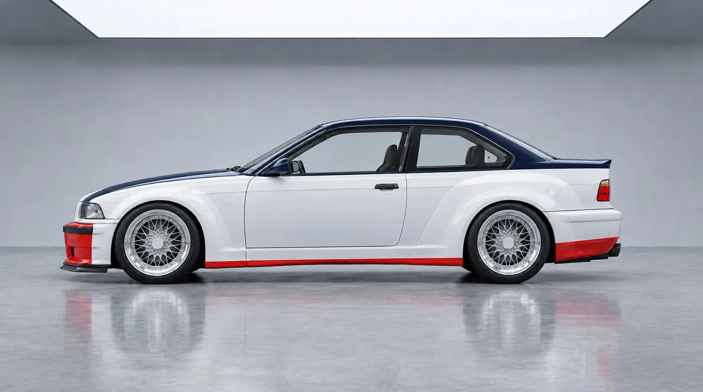
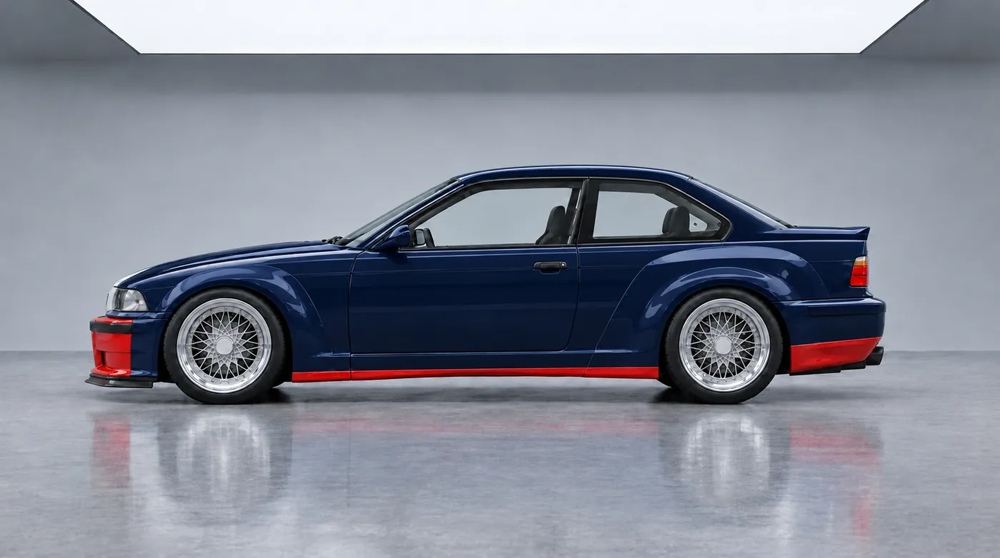
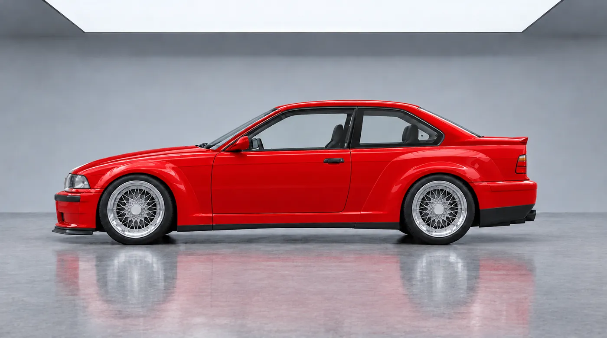
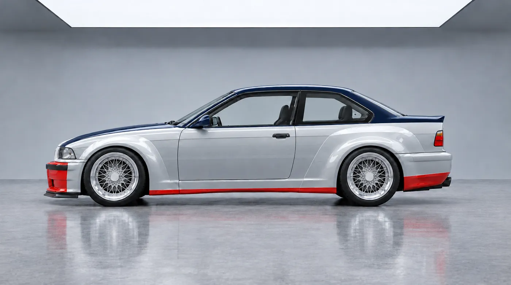
Concept render Four colours we have tried so far. Colours on a screen are only approximate.
The cabin
Two seats and a long road
Black leather and navy cloth, with red stitching to match the outside. The original dashboard stays.
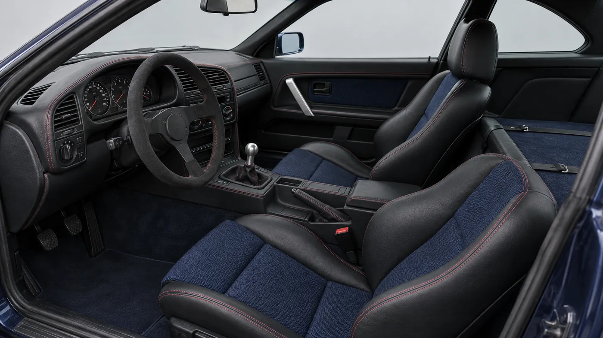
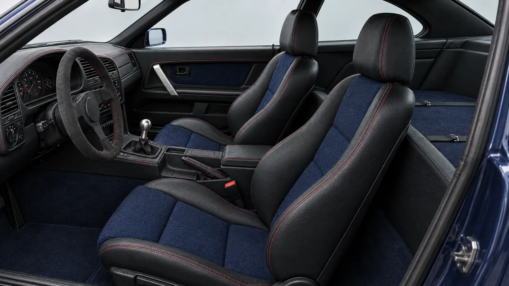
- Seats
- Fixed-back bucket seats with black leather bolsters and navy cloth centres.
- Dashboard
- The original driver-angled dash, retrimmed in black leather with red stitching.
- Controls
- Suede three-spoke wheel, a short manual lever, an aluminium knob.
- Behind the seats
- A carpeted luggage shelf with leather straps. Final structure remains under review.
Concept render A first idea for the cabin. The materials are not final.
Gallery
White, navy and red
This is the livery we started with. The body is white, the roof and pillars are navy, and the lower edges of the arches and sills are red.
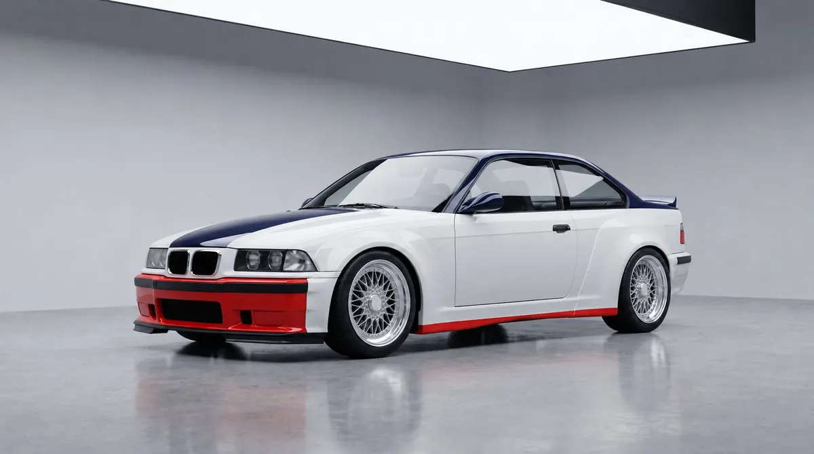
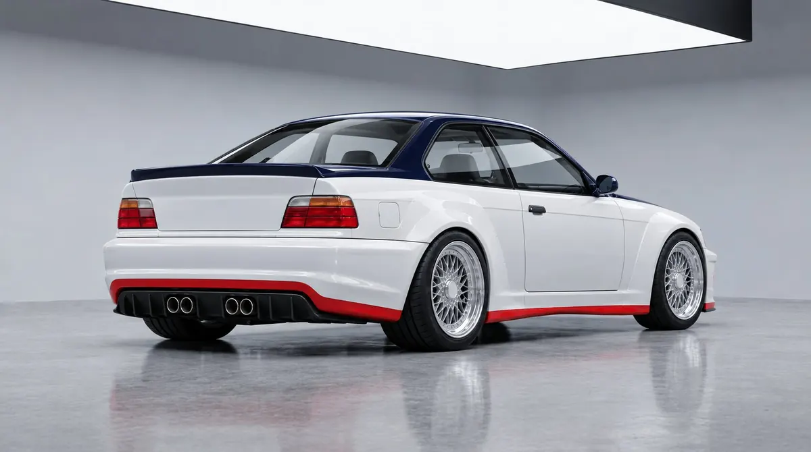
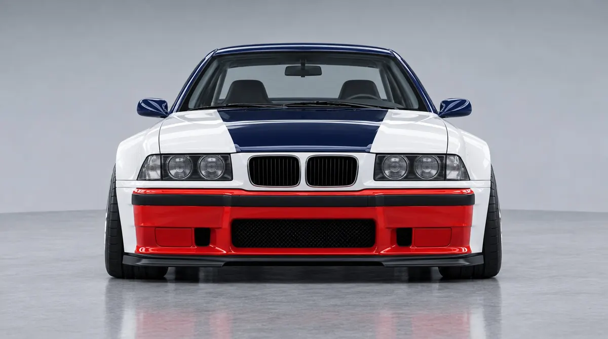
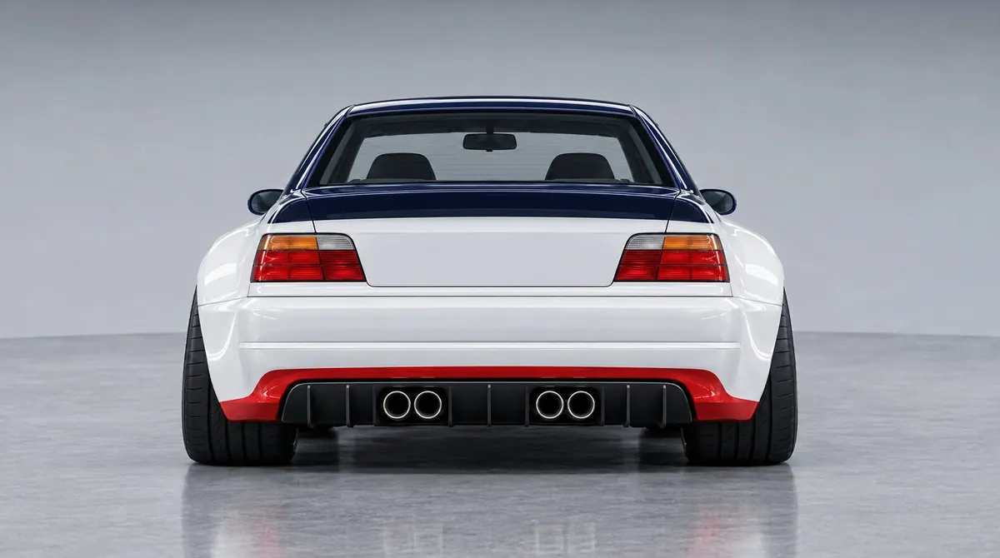
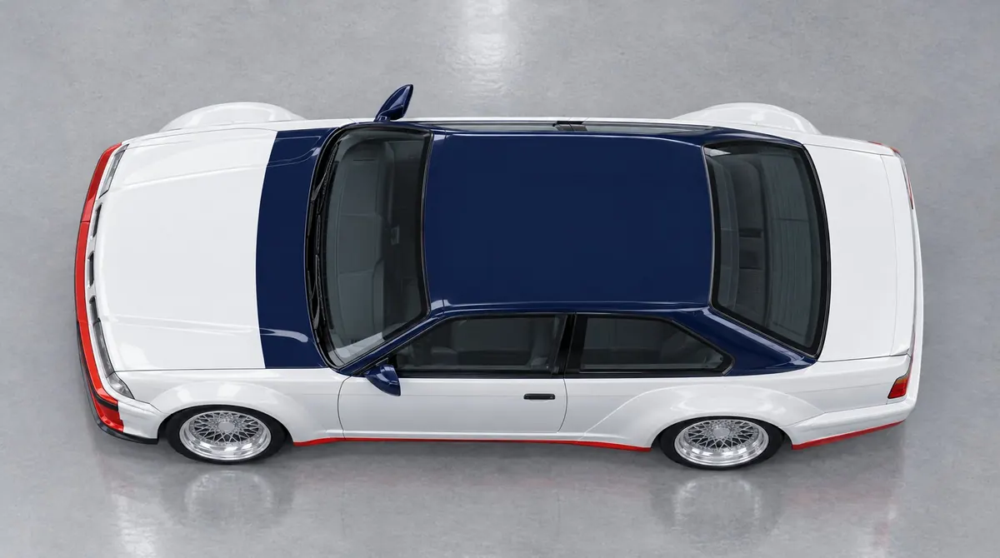
Progress
Progress on Project 97
The exterior design is chosen. No engineering has been done yet.
Recent work
- Nov 2026Six views of the car finished: front, front three-quarter, side, rear three-quarter, rear and overheadProject 97
- Nov 2026Second version of the blueprint drawn over the standard E36 M3 coupéProject 97
- Nov 2026Fourth round of the exterior chosen as the one to developProject 97
What comes next
- Find an E36 coupé and have it 3D scanned
- Check the arches and tyres against the scan
- Have an independent engineer review the design
- Decide how the body will be made, and who makes it
We have not put dates on any of this. The full plan.
Stay in touch
There is nothing to buy yet. If you would like updates on Project 97 as it develops, or want to talk about it, write to us.
Speak with us